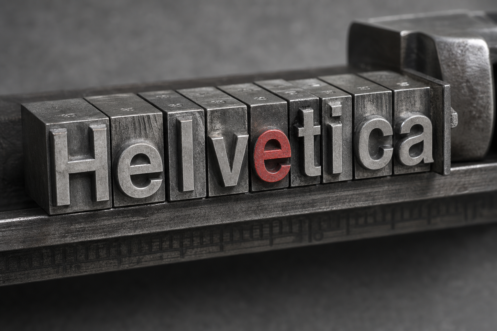
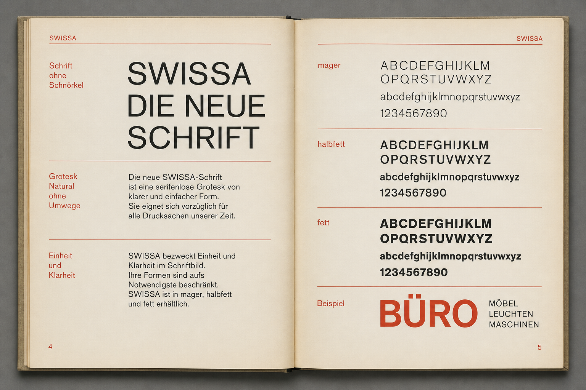
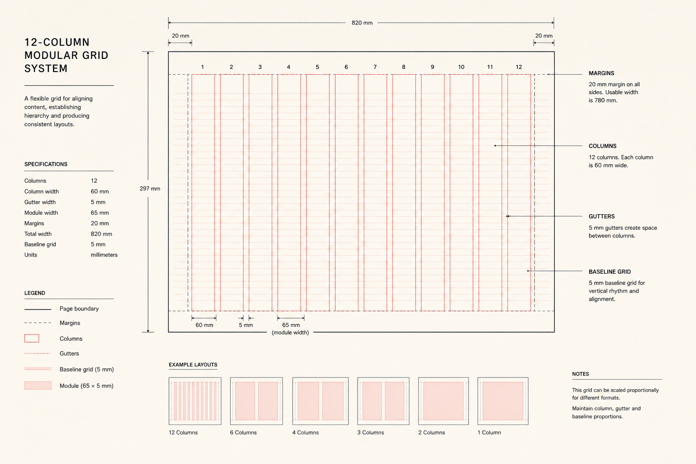

№ 042
Raster als Argument
Wie modulare Systeme im Schweizer Plakat nicht neutral, sondern rhetorisch arbeiten.

Wie modulare Systeme im Schweizer Plakat nicht neutral, sondern rhetorisch arbeiten.

Die Akzidenz-Grotesk im industriellen Alltag vor der Kanonisierung.

Warum die besten Entwürfe das Raster nicht verlassen, sondern präzise beugen.
